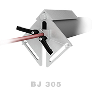
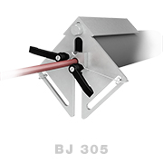
 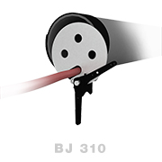
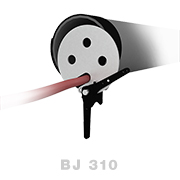
 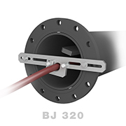
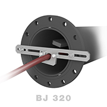
 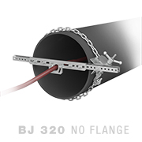
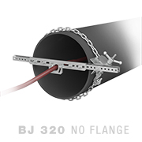
 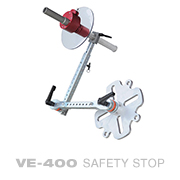
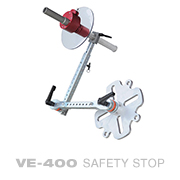
 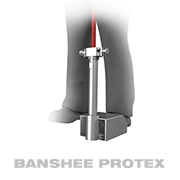
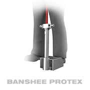
Backout Prevention
Backout preventers for pipe and tube cleaning increase safety by keeping pressurized tools from backing out of the pipe. Several options are available for a range of applications.
Backout preventers increase safety by keeping the tool from backing out of the pipe. Several options are available including fixtures for small diameter pipes, pipes with various flange bolt circle diameters, and adapters for pipes with no-flange entry.
| Tool Model | BJ 305 | |
|---|---|---|
| Pipe Size | 2–6 in. | 51–150 mm |
| Hose OD | 0.3–0.7 in. | 8–18 mm |
| Description | Backout preventer for small pipes | |
NOTE: Securing device not supplied
| Tool Model | BJ 310 | |
|---|---|---|
| Pipe Size | 4–8 in. | 100–200 mm |
| Hose OD | 0.3–1.5 in. | 8–38 mm |
| Description | Backout preventer for small to medium pipes | |
| Tool Model | BJ 320 | |
|---|---|---|
| Pipe Size | 5–17 in. | 130–430 mm |
| Hose OD | 0.3–1.5 in. | 8–38 mm |
| Description | Backout preventer for medium to large pipes | |
| Tool Model | BJ 325 | |
|---|---|---|
| Pipe Size | 15–36 in. | 380–910 mm |
| Hose OD | N/A | |
| Description | Extension kit for BJ 320 backout preventer | |
| Tool Model | BJ 340 | |
|---|---|---|
| Pipe Size | 8–36 in. | 130–910 mm |
| Hose OD | N/A | |
| Description | No-flange kit for BJ 320 backout preventer | |
The Banshee ProTex is a lightweight, durable splashguard built to keep operators safe from the potential hazards of manual flex-lancing. The ProTex is designed specifically for use with Banshee tube cleaning tools and the anti-withdrawal collet easily adjusts to fit many hose sizes. A removable insert easily centers smaller tools and we offer an optional three foot long tube for use with a Stinger.
| Tool Model | BPT-100 | |
|---|---|---|
| Hose Size | 1/8-1/2 in. | 3-13 mm |
| Upper Tube | 12 or 36 in. | 305 or 914 mm |
The VE-400 is designed to protect the operator from a flex lance exiting the tube sheet during cleaning operations. The VE-400 adapts to both horizontal and vertical applications, and the wide range of adjustment easily accommodates different sizes of tube sheets.
Backout Preventers Demo
- BPT-100 Info Sheet
- BPT-100 User Manual
- VE-400 User Manual
Courtesy of Advanced Pressure Systems
Our expert staff is available Monday through Friday 8AM - 5PM MST to answer questions and offer advice on your toughest cleaning applications.